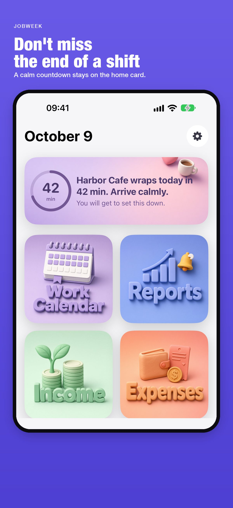
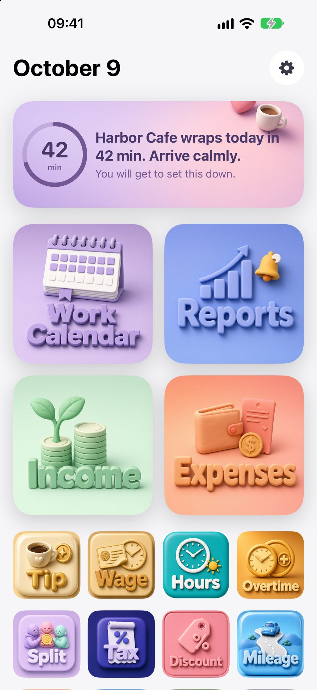
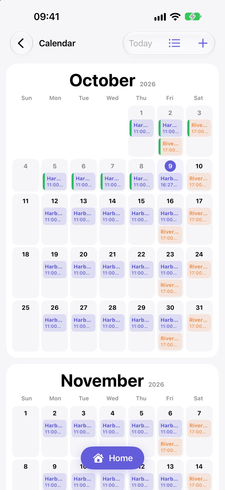
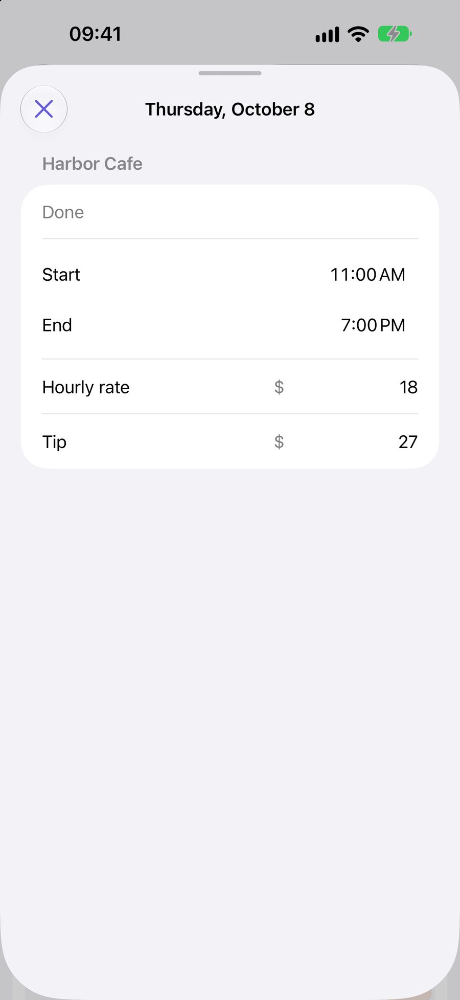
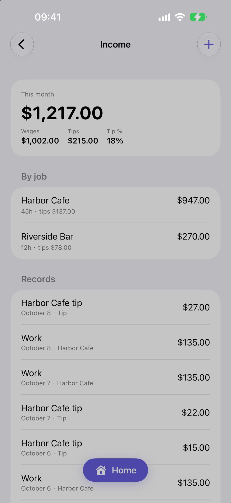
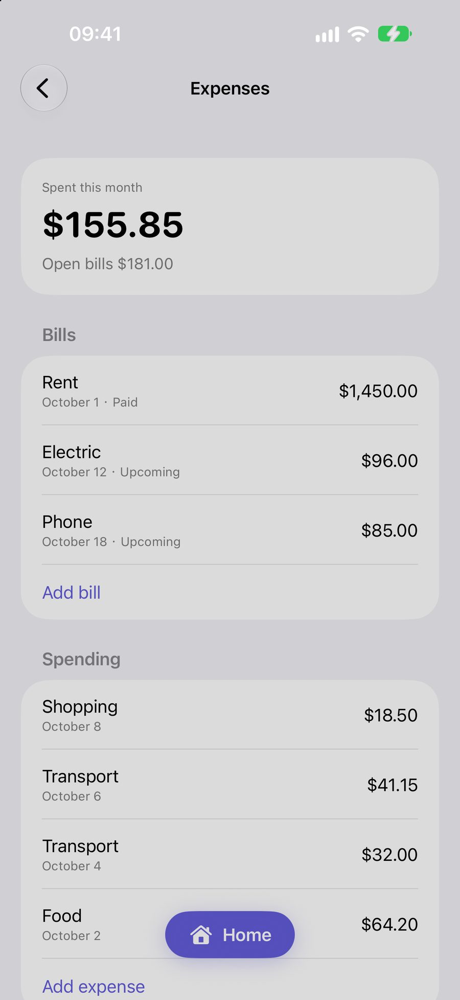
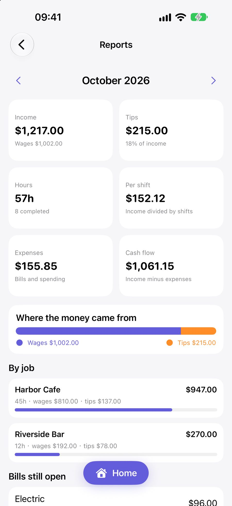
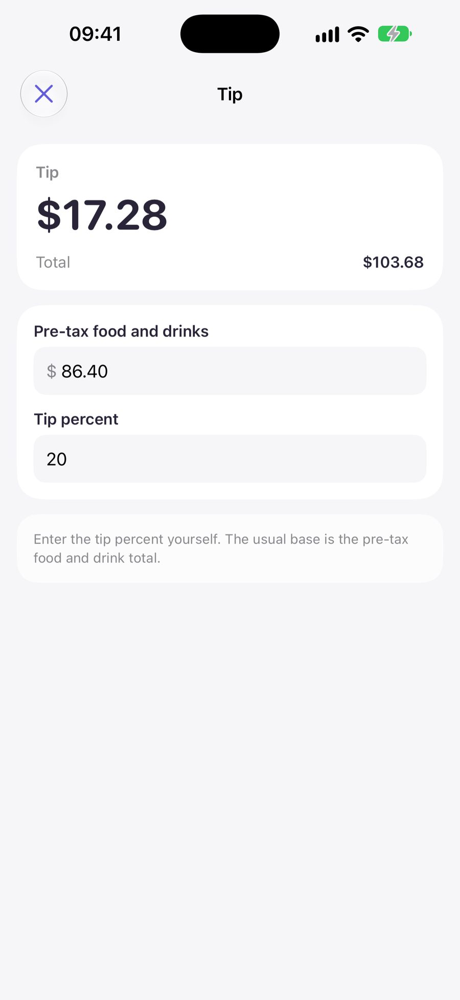
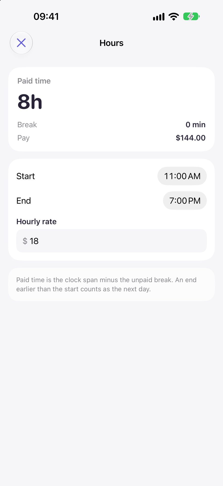

SUPPORT
JobWeek is a local planner published by Omniform Labs. It is intended to help a person keep work and the rest of the day in one view. Shifts, pay, tips, bills, and notes stay on the device. There is no account, and that record is not sent to Omniform Labs.

The product begins with the week a person is already living. Work has a start, an end, and a rate. The hours around that work have meals, errands, and bills. JobWeek is designed so those two parts of the day can be read together, without a spreadsheet and without a second application for the ordinary sums that follow a shift.
The home card is the first surface, and it is available before a subscription. It names the day. When a shift is close, or already going, the card follows that moment and shows the minutes that remain. The words are chosen from a fixed library. They change with the hour, the part of the day, and the weekend. They are written to be calm. They do not urge.
Only after that purpose is the rest of the app arranged: the calendar, the record of pay, the bills, the report, and the calculators. Each one is a way of looking at the same week.
A long shift is not only a line on a calendar. JobWeek treats rest, movement, and water as part of planning the week. The Sleep, Pace, and water calculators turn numbers a person types into everyday estimates: a bedtime, a pace, a number of glasses.
These results are estimates for planning. They are not a diagnosis, a training plan, or medical advice. They do not replace a qualified clinician. The home card uses the same restraint. A reminder may name a shift and a time. It does not instruct a person to hurry.
The home screen holds the date, the reminder, four entrances, and the calculators. The reminder is a stored line, not a message composed from private notes. Leave the app and return in a later part of the hour, and the line can change. Opening it twice in the same few minutes can show the same line, so the card does not flicker.
When a shift is under way, a ring shows the minutes left. That countdown is the feature the rest of the week is built around: the person can see the end of the shift without opening a schedule.
Swipe up to bring the full set of calculators to the top. Swipe down to return to the complete home. The four entrances are Work Calendar, Reports, Income, and Expenses.

The calendar opens at the current month and continues forward. Each job may have one shift on a day. A weekly pattern sets the days, the hours, the break, and the hourly rate. A single day can be adjusted without rewriting the pattern.
Today can be marked Done or Skip. Done leaves a green mark. Skip leaves a gray mark. Either mark can be opened again and read as a record. A day that has already passed, and is still only scheduled, can be viewed. It is not edited. A future day can be saved or skipped before it arrives.
The tip field appears only when the day is today and the shift has already started.

Opening a day shows the job, the start, the end, and the hourly rate. A completed shift also shows the tip that was entered. The screen is a record of that day. It is not a second calendar.
Sample names in the illustrations on this page, such as Harbor Cafe, are examples. A new installation starts empty. The same screens appear after a schedule has been added.

Income for the month is the sum of wages and tips. The two are kept apart, so the week’s pay is not one undifferentiated number. Each completed shift contributes its wage. A tip entered on that shift is listed on its own line.
A person may also add an income record by hand. Deleting a hand-entered record removes that line. It does not rewrite a completed shift unless that shift’s own record is the one being changed.

Expenses are the amounts already spent, and the bills that are still open. A bill has one name, one amount, and one due date. It can be marked paid. Spending can be added under a category such as food or transport.
The page states what has been spent this month and what remains open. It does not forecast a budget beyond the records that have been entered.

Reports gather the month: income, tips, hours, the amount per completed shift, expenses, and the difference between income and expenses. A bar separates wages from tips. Each job is listed with its hours.
The figures are sums of the records on the device. They are not tax, payroll, or financial advice.

The calculators are available with the home card, before a subscription. They cover a tip, a wage, hours, overtime, a split, sales tax, a discount, mileage, fuel, and the estimates for sleep, pace, and water, among others.
A rate is typed. It is not chosen from a fixed chip, and the app does not assume an official yearly mileage rate. A result stays on the screen. Calculators do not write an income or expense record.
Hours are the clock span minus an unpaid break. Overtime uses the cutoff and the multiplier that are typed, because a workplace rule is not the same in every place. The note on each calculator states the estimate it is making.

Two local reminders can be scheduled for a shift: sixty minutes before it starts, and ten minutes before. The notification may include the shift name and the start time. It does not include an amount.
Reminders and vibration are separate controls in Settings. Vibration, when allowed, runs for about one minute, whether the screen is on or off. Opening JobWeek stops the vibration and the notification behavior that is under way. The purpose is to bring the person into the app. Later reminders are not cancelled by that visit.
Both controls ask for notification permission, because a vibration while the screen is off uses a notification sound. If permission is denied, the control returns to off.

The home reminder and the everyday calculators are available without a subscription. JobWeek Premium unlocks the work calendar, income, expenses, and reports. The paywall is not presented at launch. It is presented when one of those four features is opened, and from Settings, under View Plans. Restore is in Settings and uses the Apple ID on the device.
Plans are weekly, monthly, semiannual, and annual. The weekly plan may include a three-day free trial. The monthly plan may include an introductory price for the first month. The price, and any trial, is shown by Apple for the storefront before confirmation. In one subscription group, an Apple ID can use one introductory offer. After that offer has been used, the other plan is offered at its regular price.
JobWeek does not provide tax, legal, payroll, or financial advice. Calculator results are estimates.
JobWeek is supported by Omniform Labs. We aim to answer within three business days.
For a privacy request, write Privacy Request in the subject line. Please do not send pay amounts unless they are needed for the request.
Reminders are local. Allow notifications for JobWeek in Settings if the sixty-minute and ten-minute alerts do not appear. They include a shift name and a time. They do not include an amount. Vibration uses the same permission when the screen is off.
Restore looks for a subscription on the Apple ID that is signed in on the device. If none is active on that Apple ID, Restore reports that nothing was found. View Plans, in Settings, presents the current plans for that storefront.
Last updated October 9, 2026. Provided by Omniform Labs.